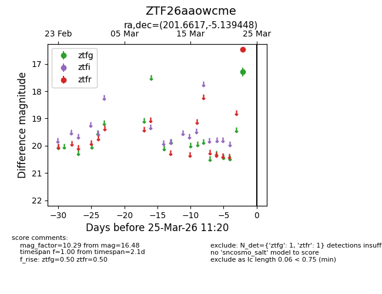
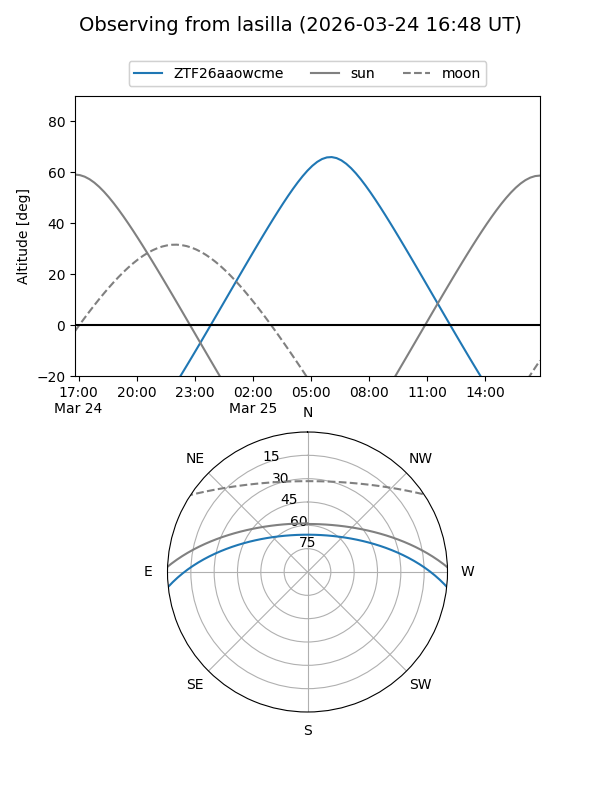
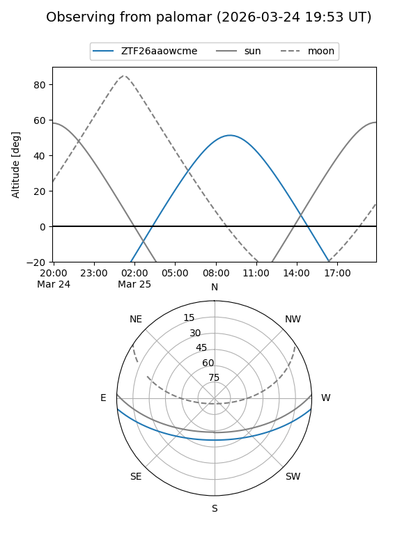

ZTF26aaowcme
Target ZTF26aaowcme at 2026-03-25 11:24
Aliases and brokers:
FINK: link
Lasair: link
ALeRCE: link
alt names
ZTF26aaowcme (ztf,fink_ztf)
Coordinates:
equatorial (ra, dec) = 201.6617,-5.13945
equatorial (HMS+DMS) = 13:26:38.80,-05:08:22.01
galactic (l, b) = (319.0176,+56.62868)
Flags:
Photometry:
last ztfg=17.30, ztfr=16.48
1 ztfg, 1 ztfr detections
Lightcurve

Visibility


Additional plots